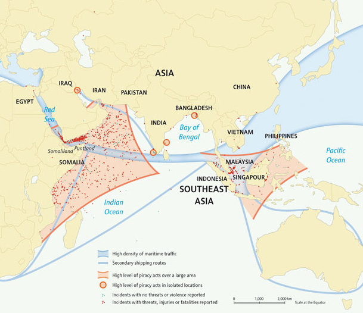
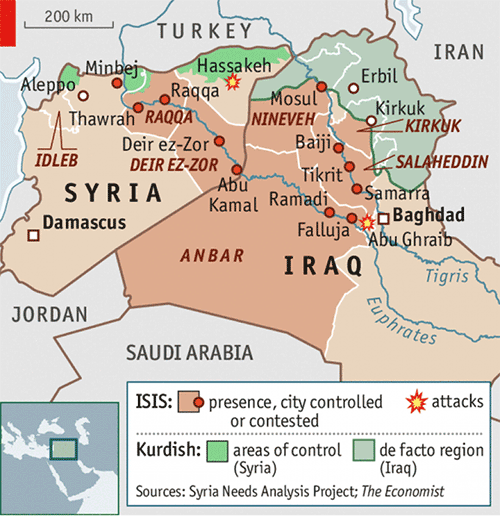

Hi there! I'm Victor H., currently a senior at Taipei American School! I've been involved in MUN since I was a lowly 7th grader, and I've stuck to this wonderful extracurricular activity ever since that fateful day I walked into a meeting knowing nothing about the inner workings of politics and international relations. Since then, I've gone to a myriad of conferences as a delegate, 3 MS-TASMUNs, 1 MYMUN in Malaysia, 1 BERMUN in Berlin, 1 IASAS-MUN (hosted at TAS), 1 NHSMUN (in New York), and another IASAS-MUN last year (hosted by the International School of Kuala Lumpur). I also chaired the TASMUN 2013 Political Committee, the TASMUN 2014 Security Council as well as the TAIMUN XI. Chairing IASAS MUN has always been a goal of mine ever since I first went to IASAS MUN 2 years ago, and I’m quite excited to see what you delegates will be bringing to the table this year. I’m definitely sure that all of you passionate, intelligent and well-prepared delegates will help to solve the problems of today and the future at this conference. See you there!
Hello delegates! I am Beatrice Tan from Jakarta International School. I was born in Singapore and came to Jakarta almost four years ago. Having attended conferences in various places such as Beijing, Kuala Lumpur and Singapore, I can say that my passion for MUN has only grown with each conference. MUN has definitely played a significant role in my high school life as I partake in fiery debates, engage in real global pressing issues, and meet witty and intelligent delegates, not to mention passing those frivolous notes!
Outside of MUN, I love swimming, running, writing and playing the piano—with that, I confess my geeky passion for classical music. Shopping is also one of my favorites that I like to add to my cardio workout! This probably explains my title of “the shopaholic” amongst my friends.
MUN has shaped my school experience academically and socially, empowering me to grow as a public speaker and mature as a leader. It is now my wish to see that my role and the thought provoking issues of Security Council will encourage delegates to participate in constructive debates and draft up innovative yet feasible solutions. I hope that this year’s conference will impact delegates’ MUN career in a positive way that previous conferences have for me. I am thrilled to be one of your chairs having the honor to witness the poise and finesse of all you delegates!
The Central African Republic has never been a nation renowned for its stability. Neither has it been a stranger to internal conflict. Ever since General François Bozizé seized power in 2003 with a coup d’etat, there has been a multiplicity of armed conflicts within the CAR, such as the Central African Republic Bush War, or the current Conflict in the Central African Republic. The current situation in the CAR began in 2012, after a coalition of rebels (the Séléka) accused the government of President Francois Bozizé of failing to abide by peace agreements signed in 2007 and 2011. Later, the capital of the Central African Republic was seized by the rebels as of the 24th of March 2013, which led to President Francois Bozizé fleeing from the CAR.
Currently, the CAR is entangled within a conflict that is in dire need of resolution. The roots of this conflict (which began in 2012) stretch back to 2003, when Bozizé first seized power. Currently, none of us should be unfamiliar with the religious element with the conflict. A large percentage of the rebel groups (previously Séléka forces) are comprised of Muslims, who are minorities in a predominantly Christian CAR. As a result of this violence against Christians, the Christians of the CAR have created the anti-balaka: Christian militias that fight against the Muslims. Both sides have committed atrocities against innocent civilians and, most disturbingly of all, much of the senseless violence in this conflict seem to be deliberate. In addition, there have been signs that point to the possibility of this conflict in the CAR becoming genocide, similar to the Rwandan genocide, if the international community does not take action soon.
The most urgent conflict that must be resolved within the CAR as of now is the sectarian violence between the Christian Anti-Balaka and the Muslim ex-Séléka forces. Both ex-Séléka forces and Anti-Balaka have been known to burn down villages of those they consider to be enemies, fire randomly at civilians, execute harmless farmers tending to crops in their fields and hacking women and children to death with machetes.
Currently, the government of the Central African Republic operates under the interim presidency of Catherine Samba-Panza. Well known for her many rousing speeches and her firm resolution to stop the conflict from worsening, the new head of CAR has shown many attempts at bettering the situation. However, the efforts of the government to regulate the conflict have not had much impact due to the fact that the government itself is newly established and does not carry much authority. Currently, what it can do to resolve this conflict is limited.
Violence and chaos run rampant throughout the nation, with the UN even going so far as to remark that the nation is at the risk of spiraling into genocide and is “descending into complete chaos”. Sadly, the ex-Séléka forces and the anti-Balaka are not the only ones causing chaos; there have been numerous reports of the Central African Republic forces lynching youths that were “suspected of being ex-Séléka members”.
However, not all hope for order in this nation is lost. In April 10th, 2014, through Resolution 2149, the UN Security Council established the United Nations Multidimensional Integrated Stabilization Mission in the Central African Republic (MINUSCA). MINUSCA is intended to back up peacekeepers from the African-Led International Support Mission to the Central African Republic (MISCA), which was previously established by Security Council Resolution 2127, and French forces currently in the CAR. A few duties of MINUSCA include: the protection of civilians, providing support for the governmental transition process, facilitating humanitarian assistance, promoting and protecting human rights. Arguably the most important aspect of MINUSCA is its duty to assist in the Disarmament, Demobilization, Reintegration and Repatriation (DDRR) of the Central African Republic. In addition to this UN mission, the International Criminal Court (ICC) has opened a second Central African investigation to try and find those responsible for the escalating sectarian violence since 2012. According to the ICC’s prosecutor, there is a “reasonable basis to believe” that war crimes and crimes against humanity (including murder, rape, use of child soldiers) have been committed by multiple parties in the conflict.
With the massive quagmire of a conflict in the Central African Republic, there is no need to reiterate once more that it is in dire need of assistance from the global community. How this much needed assistance will be implemented still is in question, and hopefully all delegates will be able to find solutions which are able to save the innocent civilians sucked into this mindless whirlwind of violence!
The ancient origin of piracy can be traced back to the time when ships were first created. This long-lived practice of maritime piracy took off at the end of the 1990s and arrived at its peak in the Western Indian Ocean of 2011. According to the United Nations Convention on the Law of the Sea Article 101, piracy can be defined as any illegal acts of violence or detention, or any act of depredation, committed for private ends by the crew or the passengers of a private ship or a private aircraft. The World Bank report published in March 2013 states that the hijacking of 149 ships worldwide from April 2005 to end of 2012 had earned the pirates between $315 million to $385 million in ransom.
Since 2005, Somalia has received global attention of being the infamous hub of piracy operation, particularly in the region of Puntland and the Gulf of Aden as pirates preyed on ships going to and coming from the Suez Canal. Somalia’s history of piracy is deeply rooted in the country’s political instability that sees the collapse of a government and a civil war. Many in Somalia have justified its acts of piracy as a response to illegal fishing and toxic waste dumping committed by foreigners, giving rise to the activities of fishermen turned pirates. This maritime threat jeopardizes the prompt and effective delivery of humanitarian aid to Somalia and the region, the welfare of seafarers and the security of commerce and navigation.
However, this issue of piracy is not to be limited to Somali waters. A quarter of the world’s seaborne shipments of oil are transported through the Strait of Malacca, rendering the region one of the international piracy hotspots. The Strait of Malacca between Indonesia and Singapore is also a strategic passage for the 70 to 80 percent of oil import by China and Japan. Piracy in the northern Indian Ocean should include the Gulf of Aden, the Arabian Sea, the Bay of Bengal and the Strait of Malacca, which are shown in the map below:
 Source: UNOSAT Global Report on Maritime Piracy 2013
It should be noted that the situation of piracy has been ameliorated by the on-going effort of international naval operations such as the International Maritime Organization. The collaboration of member states to develop measures to repress piracy should also be commended. The European Union’s EUCAP Nestor, the Regional Cooperation Agreement on Combating Piracy and Armed Robbery against Ships in Asia (ReCAAP) and the UNODC are some examples that have played a role in the development of maritime security capacities. The EUCAP Nestor has provided training on intervention techniques for Maritime Police in fighting maritime crimes. In 2013, the world sees a decline in the piracy from 353 attacks in 2012 to 264 attacks in 2013 worldwide. Although the activities of piracy have declined in recent years, there remains the need for both short and long-term solutions that will address the strengthening and construction of a legitimate government to foster an adverse environment for piracy. I am looking forward to seeing resolutions that seek to effectively address this issue from delegates!
The infamous militant group known as IS (the Islamic State) shocked the world with its rapid rise to prominence, its strange allure to countless youths around the world, its self-declared Caliphate in seized territory as well as its ruthless capability to hunt down all those who are not Sunni. Lead by the infamous Abu Bakr al-Baghdadi, this group has attracted the undivided attention of all nations around the world, no matter in a positive or a negative light.
The group first gained support in Iraq as a result of perceived economic and political discrimination against Iraqi Sunnis. Later, their entrance in the Syrian Civil War resulted in a large presence in many Syrian territories including Ar-Raqqah, Idlib, Deir ez-Zor and Aleppo. It would be the Syrian Civil War that changed its motives; originally the group only aimed to establish an Islamic state in the Sunni-majority areas in Iraq but with the Civil War it expanded its ambition to encompass all territories containing Muslims in the Levant. On June 29th, 2014, it changed its name officially to the “Islamic State” and declared the territory under its control as a Caliphate with its leader Abu Bakr al-Baghdadi as Caliph.
Although with its roots quite similar to a number of other designated terror organizations, the IS is a different beast altogether.Currently, the IS controls select parts of Iraq and Syria (as shown in the map below):

Because the IS has actual territory that it holds, it is much more well-funded than many other similar organizations. Whereas Al Qaeda or Boko Haram primarily receive money through various benefactors and extortions, the IS also controls a number of oil production facilities and oil collection points. This, combined with their more traditional routes of acquiring income like extortion and kidnapping have made the IS into the well-funded giant it is today. In Nigeria for example, a weak system of governance may fuel the alliance between Boko Haram and the IS. Therefore, the activities of IS such as alliances and recruitment made in the developing nations are to be considered by delegates.
Besides its economic anomaly, the IS has also made its name for being the “most extreme” out of all extremists. In February, Al Qaeda famously and formally dissociated itself from the one-time affiliate IS (then still called the Islamic State of Iraq and Syria) citing the IS’s “infamous intractability” as the reason for the split. IS’s more brutal tactics, including public executions, beheadings, floggings, bans on smoking, music, and all other perceived un-Islamic behaviors have incurred the wrath of not only Al Qaeda but also ordinary Syrians who might have been sympathetic to its ideals.
However, such “extreme” measures have only increased the allure of the IS in the eyes of some. Besides its revenue from its oil production and extortions, many benefactors from wealthy Middle Eastern nations continue to donate to fund the vision of IS. Many Europeans and even Americans have announced their sympathies for IS, with the IS housing more than 2000 Europeans and 100 Americans among its ranks.
The Islamic State remains designated as a terrorist organization by the United Nations, the United States, the United Kingdom, Australia, Canada, Israel, Turkey, Indonesia, and Saudi Arabia. With Amnesty International also declaring the group guilty of ethnic cleansing on a historic scale and the IS itself recently proudly announcing their enslavement of many Yazidi men and women, it is clear that the IS is not here to try and make the world a better place. IS must be stopped.